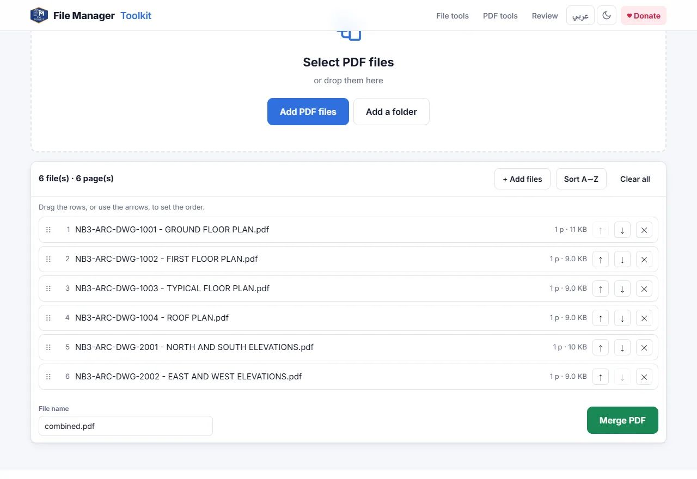

How to merge PDF files without uploading them
Combine several PDFs into one file in the order you want, while the files stay on your own computer. No upload, no account and no limit on the number of files.
Your files stay on your computer. Nothing is uploaded.
Short answer
Open Merge PDF, click Add PDF files or Add a folder, put the files in order by dragging them, type a file name and click Merge PDF. The merged file is created by your browser and saved to your computer. Your PDFs are never sent to a server.
Why "without uploading" matters
Most online PDF sites work the same way: you upload your files to their server, the server merges them, and you download the result. Even when the site promises to delete the files after an hour, your documents have still been copied to a computer you do not control.
That is a problem for contracts, client drawings, tender documents, HR files and anything under an NDA. Many companies do not allow staff to upload such files to free websites at all. A merger that runs inside the browser avoids the question: the files are opened on your computer and the result is written on your computer.
Step by step
Add your PDF files
Open the tool and click Add PDF files, or Add a folder to take every PDF in a folder. You can also drag files from your desktop onto the page.
Put them in order
Drag the rows, or use the up and down arrows, to set the order. Sort A→Z puts them in name order, which is handy when the files are numbered.
Check the page count
Each row shows the number of pages and the size, and the top line shows the total, so you can see at a glance that nothing is missing.
Name the file and merge
Type a name in File name, for example Issue 03 - Architectural set.pdf, and click Merge PDF. The merged PDF is saved to your downloads.

How to check that nothing is uploaded
You do not have to take our word for it. Open the page, press F12 to open the developer tools and choose the Network tab. Add your PDFs and merge them: you will see no request carrying your files. You can even disconnect from the internet after the page has loaded and the merge still works. The source code is public on GitHub.
Tips
- Number your files first, for example with Rename Files or Rename from Title Block, then use Sort A→Z to get the right order in one click.
- Need only some pages? Use Split PDF first to take out the pages you want, then merge.
- Bookmarks and form fields from the original files may not be kept, so check the merged file if you rely on them.
- Password protected PDFs must be opened and saved without a password first.
Merge your PDFs now
Free, runs in your browser, and your files never leave your computer.
Open Merge PDF →Questions
Is it safe to merge confidential PDFs here?
Yes. The files are read and merged by your own browser. They are not uploaded, stored or seen by anyone else.
Can I merge PDF files offline?
Yes. Once the page has loaded, the merge works without an internet connection, because all the work happens on your computer.
Is there a limit on the number of files or pages?
There is no fixed limit. Very large sets depend on your computer's memory; hundreds of drawings are normally fine.
Do I need to install anything or create an account?
No. It works in Chrome, Edge, Firefox and Safari with no install and no sign up.
Will the quality of my PDFs change?
No. Pages are copied as they are, so text stays sharp and vector drawings stay vector.